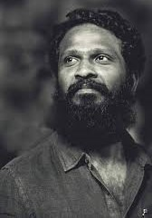

|  |
Vetrimaaran, born on September 4, 1975, is a critically acclaimed Tamil film director, screenwriter, and producer known for his gritty, realistic storytelling. He made his directorial debut with Polladhavan (2007), but it was Aadukalam (2011) that won him national recognition, including six National Film Awards. Vetrimaaran's films, like Visaranai, Asuran, and Vada Chennai, are known for their raw portrayal of socio-political issues and complex characters. His collaborations with actor Dhanush have been particularly successful. Vetrimaaran's work has earned him a reputation as one of Tamil cinema's most influential contemporary filmmakers. |